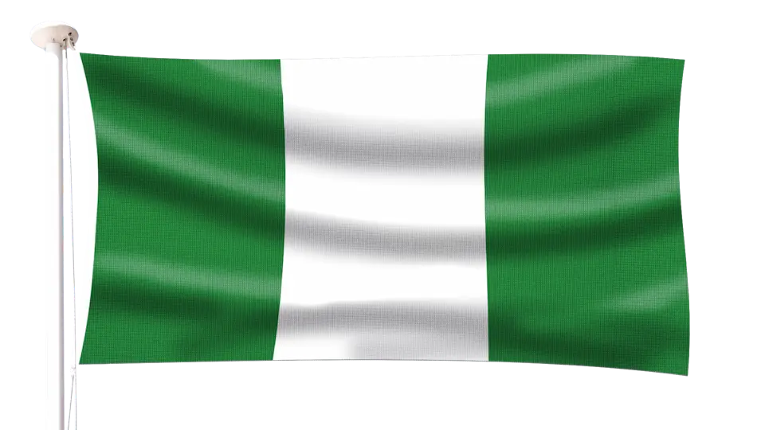

Favour Amoni
About Me
Hello! My name is Favour Amoni. I am a student at BYU-Idaho through BYU-Pathway Worldwide. I have a passion for technology and programming, and I enjoy learning how things work behind the scenes. I find it exciting how a few lines of code can be used to create something useful, creative, and meaningful. I am currently developing my skills in web development, especially HTML, CSS, and JavaScript. I enjoy exploring new concepts, solving problems, experimenting with code, and challenging myself to learn new things. Although I am still growing as a programmer, I am excited about the journey and the opportunities that come with it. My goal is to become a skilled developer who can create functional, beautiful, and user-friendly websites and applications. I believe that learning is a continuous process, and I look forward to improving my skills, gaining experience, and turning my ideas into reality.
Nigeria

Nigeria is a country in West Africa known for its cultural diversity, beautiful landscapes, rich traditions, and vibrant communities. It is a country filled with creativity, different languages, and opportunities for learning and growth.